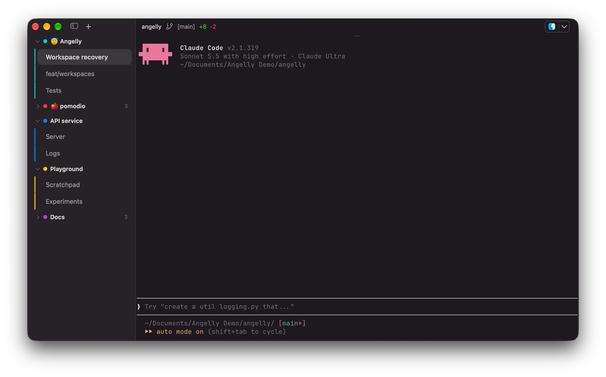

Give each project a place.
Group tabs, add a color, and get back to the right context without hunting through a row of windows.
A SHELL WITH ROOM TO MOVE
Tabs turn into projects. Projects keep their place. And when the window closes, your work can find its way back.
macOS 14+ / FREE & OPEN SOURCE

THE SMALL THINGS THAT CHANGE YOUR DAY
A few useful ideas, kept close to the command line.
Group tabs, add a color, and get back to the right context without hunting through a row of windows.
Create, open, and remove worktrees from either tab layout. Branch context stays where the work is.
Recover recently closed windows, including after restarting Angelly. Detours happen.
SAME TERMINAL. DIFFERENT WINGS.
Ten alternate app icons, made for the macOS Dock. Choose a style to see it up close.
6 / 10 ALSO IN THE SET: GLASS · MICROCHIP · PAPER · EGYPTIAN
Angelly is free. Choose your route.
brew tap adetxt/angelly https://github.com/adetxt/angelly
brew install --cask adetxt/angelly/angellyREQUIRES macOS 14 OR LATER · UNIVERSAL BUILD FOR APPLE SILICON + INTEL